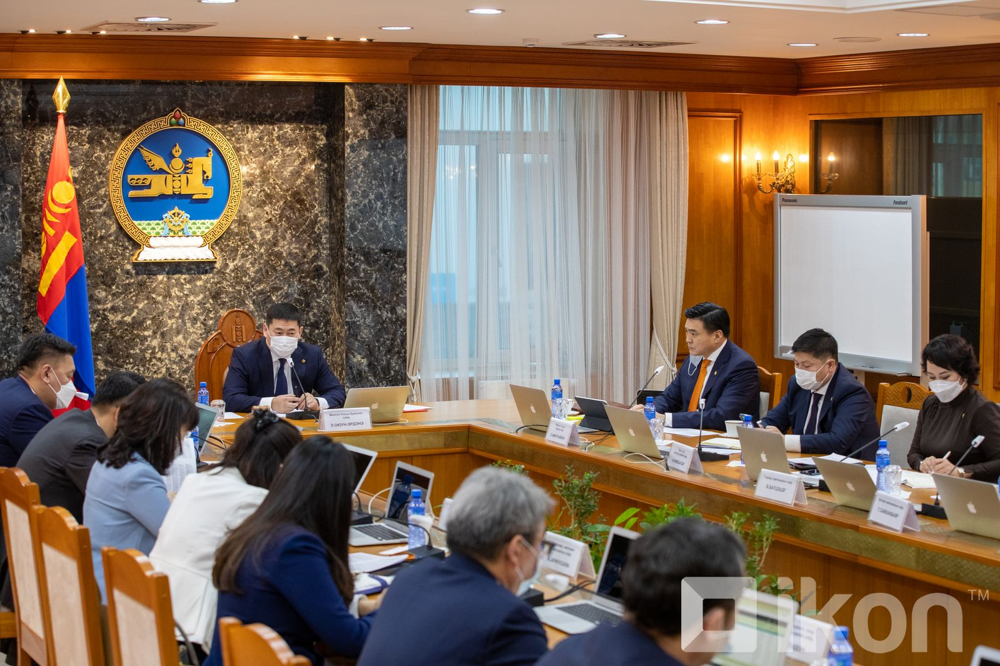
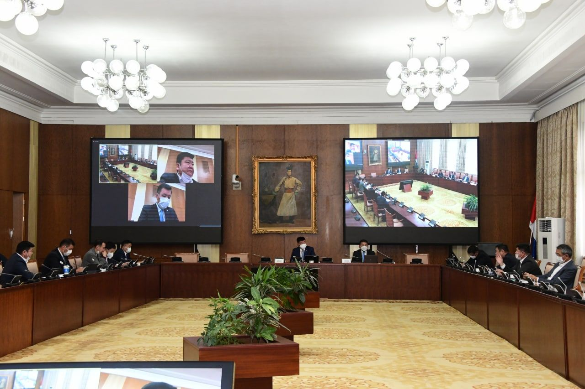
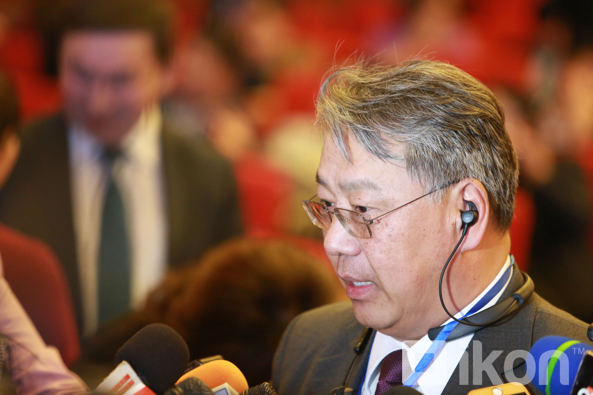

Улс төртэй холбоотой мэдээлэл
|
Засгийн газрын өнөөдрийн хуралдаанаар Нийгмийн даатгалын багц хуулийн төслийг хэлэлцэнэ  Монгол Улсын Засгийн газрын ээлжит хуралдаан өнөөдөр болж байна. Хуралдаанаар хэлэлцэх асуудлуудын нэг нь Нийгмийн даатгалын багц хуулийн төсөл байгаа юм. Нийгмийн даатгалын хууль эрх зүйн орчинг боловсронгуй болгох зорилгоор Хөдөлмөр, нийгмийн хамгааллын сайдын 2020 оны А/197 дугаар тушаалаар нийгмийн даатгалын багц хуулийн төслийг боловсруулах үүрэг бүхий ажлын хэсэг шинэчлэн байгуулагдсан. Тодруулбал, коронавируст халдвараар өвчлөөд эдгэрсэн даатгуулагч өрхийн эрүүл мэндийн төвөөсөө лист, эрүүл мэндийн хуудас аваад хөдөлмөрийн чадвар түр алдсаны тэтгэмжээ авах боломжтой юм байна. |
"УИХ-ын намрын ээлжит чуулганаар Согтууруулах ундааны эргэлтэд хяналт тавих хуулийн төслийг хэлэлцэнэ"

УИХ-ын Хууль зүйн байнгын хороо өнөөдөр хуралдаж, гурван асуудал хэлэлцэн шийдвэрлэв. Хуралдаанаар “Хууль зүйн байнгын хорооны энэ оны есдүгээр тогтоолд өөрчлөлт оруулах тухай” Байнгын хорооны тогтоолын төслийг хэлэлцлээ.
Шүүхийн ерөнхий зөвлөл болон Шүүхийн сахилгын хорооны шүүгч бус гишүүнийг сонгон шалгаруулах ажлын хэсгийн бүрэлдэхүүнд өөрчлөлт оруулах шаардлага үүссэн гэдгийг Байнгын хорооны дарга С.Бямбацогт танилцуулсан юм.
Р.Амаржаргал: Туршлагагүй, мэдлэггүй хүмүүс улс орныг удирдаж яваа үед юу ч хүлээгээд нэмэргүй

Зүй нь төрийг удирдаж залж чиглүүлж яваа эрх мэдэл маань ард олноос угшилтай, тэдний надад итгэж өгсөн зүйл учраас би ард иргэддээ итгэх ёстой гэсэн хандлагаар ажиллах учиртай. Ийм том философийн асуудлыг төр удирдаж яваа хүмүүс маш сайн ойлгосон байх ёстой. Харамсалтай нь өнөөдөр тийм юм алга.
Эхлэл
Ковид-19
Улс төр
Эдийн засаг
Нийгэм
Эрүүл мэнд
Дэлхий дахин
Хэрэглэгч